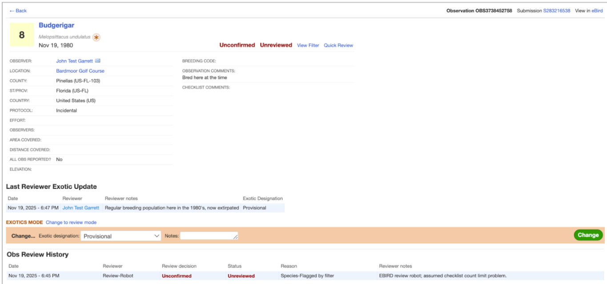
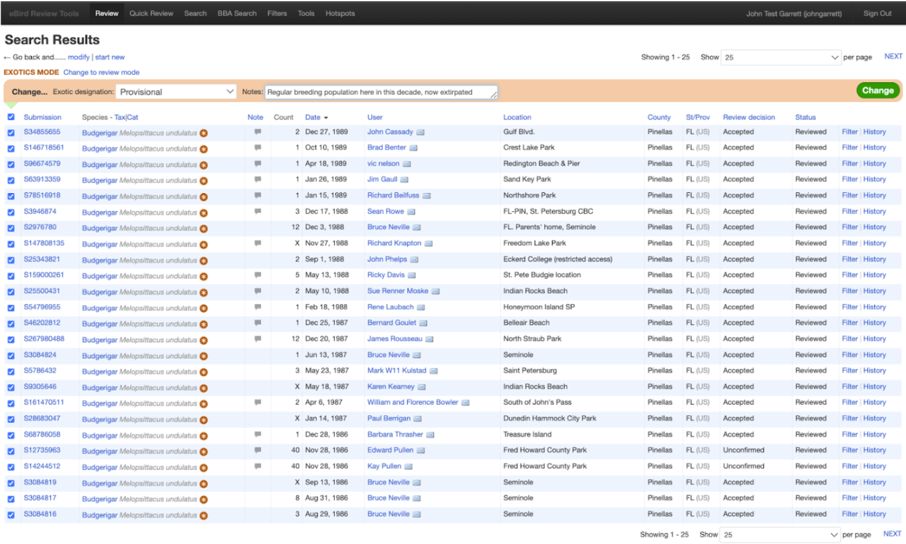

Exotic Species
In addition to reviewing whether observations are Accepted or Unconfirmed and whether checklists are Public or Not Public, the third major role for reviewers is ensuring that Exotic Codes for an observation are set correctly. Like observation review, these decisions affect display on regional output (e.g., Region Explorer pages). Unlike observation review, however, these also affect personal list totals for birders (and their Top100 stats). For these reasons, this is a role to be taken very seriously. Please take time to understand how Exotic species are handled in eBird before performing any of these reviews; consult with your review team or eBird Central if you need help.
Collecting observations of exotic species in eBird is important and we have built a system to identify and tag these species with an Exotic Code, while still incentivizing the reporting of those that are breeding in self-propagating populations. Our goal (where reasonable to do so) is to apply an Exotic Code to all exotic species observations in eBird (native species receive no code). These codes are as follows (see detailed definitions here):
Naturalized: Exotic population is self-sustaining, breeding in the wild, persisting for many years, and not maintained through ongoing releases (including vagrants from Naturalized populations). These count in official eBird totals and, where applicable, have been accepted by regional bird records committee(s).
 Provisional: Either: 1) member of exotic population that is breeding in the wild, self-propagating, and has persisted for multiple years, but not yet Naturalized; 2) rarity of uncertain provenance, with natural vagrancy or captive provenance both considered plausible. When applicable, eBird generally defers to bird records committees for records formally considered to be of “uncertain provenance”. Provisional species count in official eBird totals.
Provisional: Either: 1) member of exotic population that is breeding in the wild, self-propagating, and has persisted for multiple years, but not yet Naturalized; 2) rarity of uncertain provenance, with natural vagrancy or captive provenance both considered plausible. When applicable, eBird generally defers to bird records committees for records formally considered to be of “uncertain provenance”. Provisional species count in official eBird totals.
 Escapee: Exotic species known or suspected to be escaped or released, including those that have bred but don’t yet fulfill the criteria for Provisional. Escapee exotics do not count in official eBird totals.
Escapee: Exotic species known or suspected to be escaped or released, including those that have bred but don’t yet fulfill the criteria for Provisional. Escapee exotics do not count in official eBird totals.
There are two ways that Exotic Codes are applied.
- Our automatic system (affectionately known as The Matrix) stores Exotic Codes by region (e.g., country, state, or county) along with notes justifying that treatment. Upon data entry, a preliminary Exotic Code from The Matrix is applied to the record and in the vast majority of cases, these will be the correct final code. The Matrix is updated periodically, so if a species is not getting the correct preliminary code in your region, report the issue on our Changes to the Exotics Matrix form or contact eBird Central directly.
- Reviewers can change the Exotic Code for any Observation in their review region as well, as described below. When a reviewer applies an Exotic Code, a History is recorded as Last Reviewer Exotic Update (there is no history for Exotic Codes applied by The Matrix). Once a reviewer applies an Exotic Code, this will be the final Exotic Code and will not be changed by the automated system (even if the Matrix is changed). It will change in only two scenarios: 1) changed by a reviewer again; 2) location of checklist is moved across a county, state/province, or country boundary, in which case the Exotic Code will be reset by the automated system (the Last Reviewer Exotic Update history will be retained). When Exotic Codes are adjusted manually, please make sure to apply them consistently to all observations in a region, not just to a couple (or else the Exotic Code will not display correctly in regional summaries , maps, etc.).
To make a change to an Exotic Code, simply switch to Exotics Mode above the green bar on any eBird review screen (e.g., Review Queue, Search, History, or Submission pages). Once in Exotics Mode, the green bar will change to orange and the drop-down will include the four exotic categories: Escapee, Provisional, Naturalized, and native (selecting native will remove the Exotic Code altogether). The below examples show the process of changing a record of Budgerigars in Pinellas Co, Florida from Escapee (the default preliminary code from the Matrix) to Provisional, since it is from a time period when the population had a breeding population that met the qualifications for Provisional.

Click on “Change to exotics mode” just above the green bar


Select the appropriate Exotic designation from the dropdown and enter Notes. You MUST enter a note before the system will let you click ‘Change’ on the right.

Changes can also be made in bulk in the Review Queue and Search. Switch to Exotics Mode, select all applicable records, apply an Exotic Designation, add Notes (required), and click the green Change button to update records in bulk. The below example will switch all records to Provisional once the green Change button is hit.

We expect reviewers to need to use Exotics Mode only rarely. Regionwide changes are best implemented via the Matrix, so report those to our Changes to the Exotics Matrix form. The main cases where reviewers will need to make changes will be instances where more than one Exotic Code are needed for the species in a region, either because of geographical differences in Exotic Status or changes in Exotic Status over time (see below): both of these will be best addressed by using Search to find those records and then tagging them in bulk. In some cases, an individual record may need to be treated as native or Escapee (more rarely Naturalized or Provisional). Again, use Search to find those observations to adjust them. In such cases, we want to first confirm that the Matrix tag was the best guess for the region and that the record being changed is an exception that will be rare in the future.
The end goal here is to have the correct Exotic Code for each record. Please use Exotics Mode whenever needed to help correct the Exotic Code for records, just be aware that adjusting the Matrix will be a better solution if the majority of records need to get the same Exotic Code.
We encourage reviewers to review and accept all records of free-flying Exotic species (provided they are correctly identified) and to ensure that the correct Exotic Code is applied. Formerly, some records were treated as Unconfirmed with reason Species-Introduced/Exotic but it is no longer appropriate to mark an Exotic species Unconfirmed if it is free-flying and correctly identified..
In general, Naturalized and Provisional species should be included on your filter(s), and some very frequent Escapee species may also deserve to be on your filter, as long as you have confidence that most reports of the species will be correct.
Changes in Exotic Status over time
The Matrix does not include dates, so we depend on reviewers to maintain consistent data over time. But every Exotic species obviously has a period that predated their introduction where records might have only pertained to Escapees; this is very uncommon but is not a major problem: Exotic species are generally absent or nearly absent until they are introduced (for example, there were no reports of Swinhoe’s White-eyes in California prior to their introduction in 2006). For Naturalized species (and Provisional species), we do consider it valid to treat them as Provisional or Naturalized from the moment of introduction that led to their expansion and colonization. Thus the white-eyes would earn Provisional status starting in 2006 (they are currently still Provisional) and once Naturalized, the records all the way back to 2006 would count as Naturalized. But a record from 1985 would be treated as Escapee, since it was not part of the population that led to colonization.
Less commonly, native species or Naturalized exotics have become extirpated (although in the latter cases, it is worth considering if Naturalized status was truly achieved and if perhaps those records are better treated as Escapee; note that Provisional species revert to Escapee status if the population becomes extirpated). When this happens, reviewers may want to treat them as Naturalized between a certain range of years, and Escapee thereafter. For example, Northern Bobwhite historically occurred as a native species north to southern New Hampshire. As of 2024, most populations north of Virginia have been extirpated and in many regions (New Hampshire, Rhode Island, Connecticut, and all of Massachusetts except Cape Cod) the species only occurs when individuals are periodically released. Thus, most of these states have a specific date after which all records are treated as Escapee, The Matrix has been set to account for the modern status, and the species is flagged as a rarity in those areas. Older records have been reviewed and changed to native status and newly submitted records can be left as Escapee for modern records and changed manually to native if someone enters a historical sighting from the period when the species occurred naturally.
Ship-assisted birds
Ship-assisted birds are those that travel a significant portion of a voyage over open water on a ship; many Nearctic landbirds have been found in European ports on or near transatlantic ships, for example. Similarly, House Crow is renowned for traveling much of the world on ships and even establishing colonies based on these ship-assisted travels. Though different record-keeping authorities treat ship-assisted birds in different ways, within eBird these records should always be accepted if the identification is correct and the rarities are adequately documented. Please clearly indicate in Reviewer comments that the record is considered a likely or certain ship-assist. However, since ship-assistance can also involve active or passive restraint and relocation of birds (not unlike transporting and releasing a captive bird) it can sometimes be appropriate to also apply an Exotic Code to these observations. Below are our recommendations; these apply to both seabirds (e.g., Red-footed Booby) and terrestrial birds (e.g., White-throated Sparrow):
- For a healthy (i.e., able to fly readily) bird that may ride a ship for a short distance into port, treat it as native unless it is known to have traveled with the ship, without leaving, for 300+ km or for many days of travel (e.g., a ship-riding Red-footed Booby in Alaska).
- For a healthy (i.e., able to fly readily) bird that is known to have traveled with the ship, without leaving, for 300+ km or for many days of travel, please treat it as Provisional (for example, House Crow in South Korea and Great-tailed Grackle in Hawaii).
- For a bird that is unhealthy (i.e., not able to fly readily), fed, or restrained, please treat it as Escapee if the travel on a ship brings it to a new region (for example, Hawfinch in California or Cape Verde Sparrow in the Netherlands).
Rehabilitated Birds
Wildlife rehabilitators often take in interesting species. If a rehabilitator submits a record of a bird, it is important that: 1) its location be plotted at the location and date that it was recovered from the wild; 2) documentation may then be submitted from captivity, if needed, even if it is taken on a later date. This is a special case where the date of the photo may not match the date of observation, since this is a scenario where it is known that the same bird is involved. Additional records should not be submitted while the bird is captive. Once the bird is released, it may be submitted to eBird again but in some cases we recommend marking these records as Provisional. For example, records of a Red-necked Grebe and Clapper Rail recovered somewhere in downtown New York City and later released in Central Park resulted in non-natural occurrence in the park. For these reasons, this is a special case where Provisional status may be used to signify non-natural occurrence.
Other special cases
There are a few other special cases where reviewing a record in Exotic Mode is appropriate.
These include:
- Records of species that may pertain either to wild vagrants or Escapees; these should be reviewed as Provisional if either option really feels possible. They can be updated at a later time if additional research (including Bird Records Committee decisions) determine the record to pertain to a native vagrant or an Escapee.
- Checklists involving Captive Species (See the Captive Species review reason below); in addition to being marked Unconfirmed through record review or being marked Not Public through Checklist-level review (see Not Public, Checklist-Captive Species below), captive species can be treated as Escapee. This ensures that they are not counted in personal list totals or Top100. While eBird reviewers are not list police, this is a chance to ensure that Top100 reflects consistent rules for all and excludes captives.